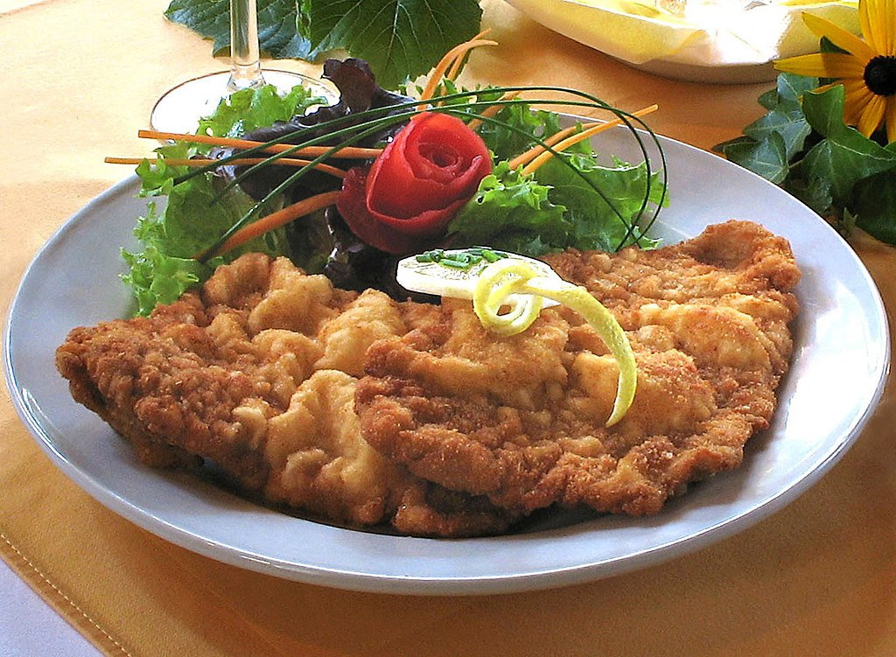

Recipe for Wiener Schnitzel
Wiener Schnitzel

Wiener Schnitzel is one of the best known specialities of Viennese cuisine, and one of the national dishes of Austria. It is also very popular in other german speaking countries and regions and often associated with german culture as a whole.
Ingredients
- 1.5 pounds of veal cutlets
- Flour and eggs
- Cheese and Milk
- Minced pasley, salt, pepper, nutmeg
- Bread crumbs
- Butter
- Lemon
Steps
- Pound the cutlets into 1/4-inch thickness
- Dip the cutlets in flour, then shake off the excess
- Mix the eggs, cheese, milk, and seasonings in a bowl
- Dip the cutlets in the egg mixture, then coat it with bread crumbs
- Refrigerate the coated cutlets for one hour or up to overnight
- Cook the breaded cutlets until brown and transfer to a serving platter
- Dizzle with pan juices and garnish with lemon slices
back